Night Sky in Alaska
Stars, Moonlight, and the Aurora
Night observing here has a certain quiet to it. The cold settles in, the sky deepens to a velvet blue, and the universe feels very close.
In Alaska, the skies outside of the cities are so very dark that the sky seems like there are so many stars that they seem to touch each other. The best sky views happen when the air is bitter cold and no wind stirs. This is when the magic can happen. However, it's also when the equipment tends to misbehave; gears come to a grinding halt, batteries drain quickly, weather can move in quickly. The other consideration is that the sky is only dark in the winter. For me, this is the main reason for solar observing.
I am just starting out in astrophotography. For the last several years, I have just been fascinated by visual astromony. For a long time I just didn't feel the need to record what I was seeing. I thought astrophotography was confusing, expensive, and that there wasn't any chance that I could produce the quality of images that are posted all over the internet. I have since discovered that it doesn't matter how good the images are, it's all about the experience.
 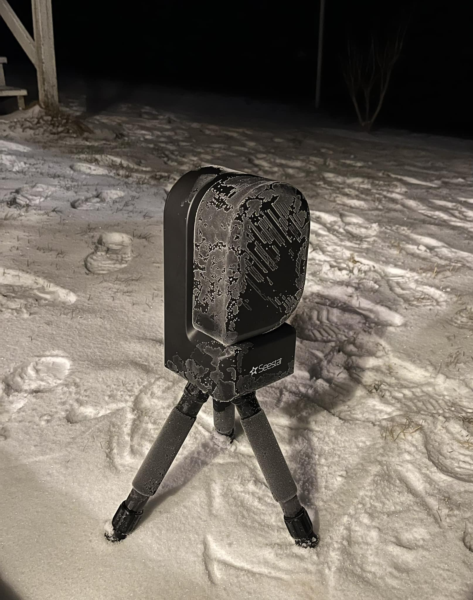
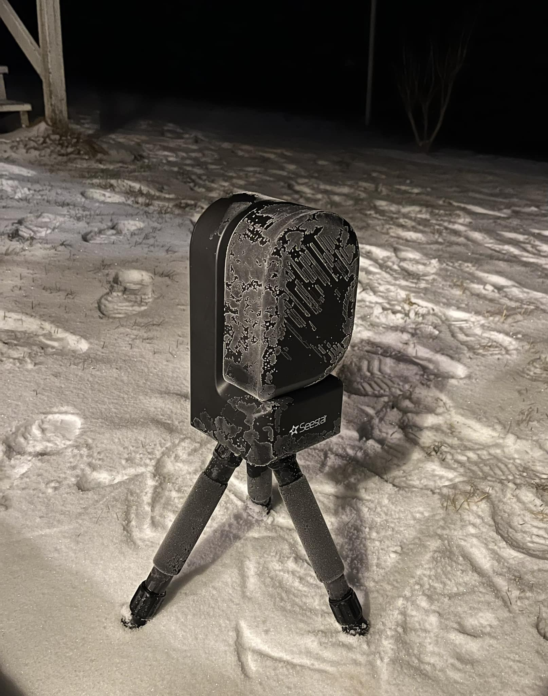
 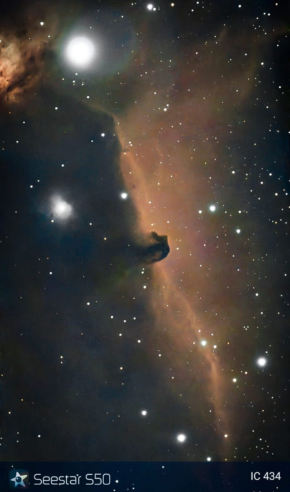
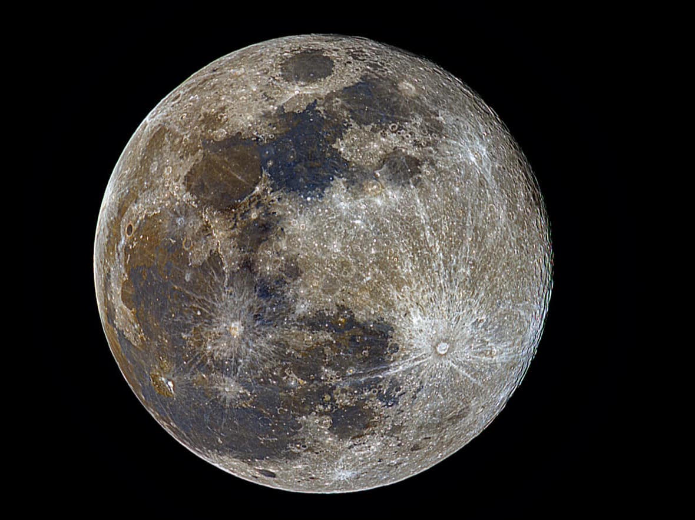
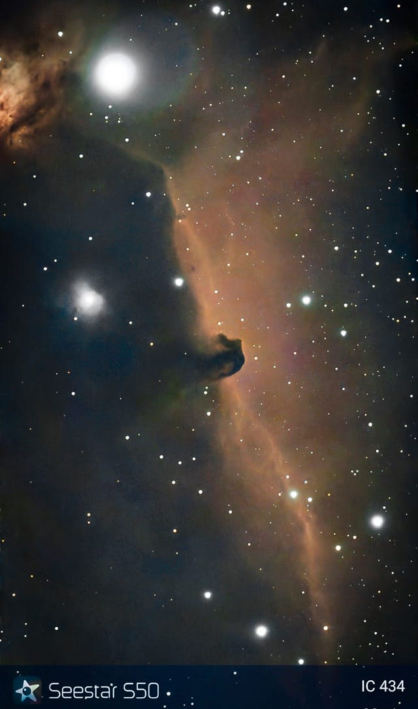
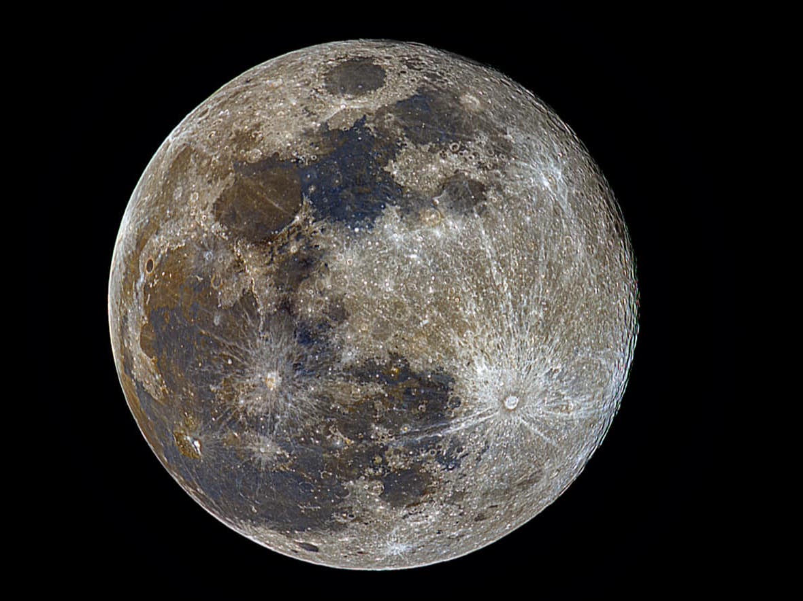

 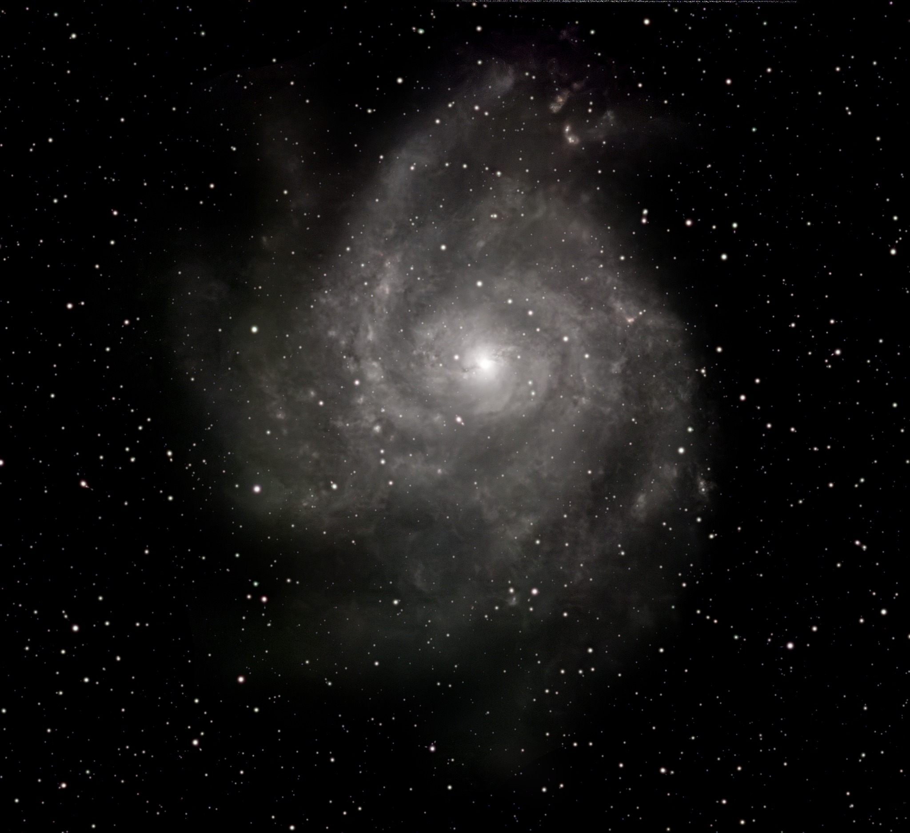
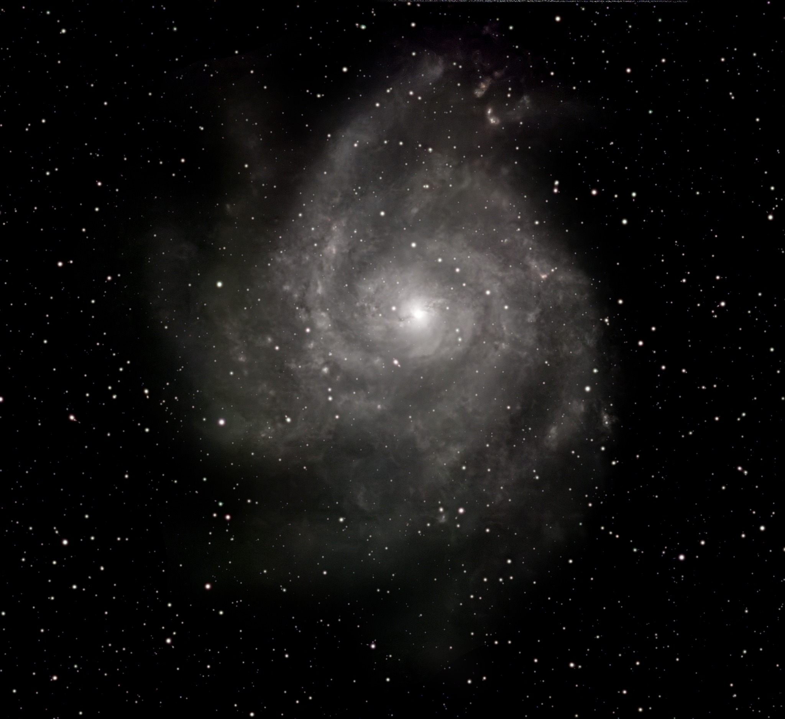
Alaska is known for it's beautiful auroras. This wonderful lights in the sky are the result of a natural light display in the Earth's sky caused by interactions between charged particles from the Sun and gases in the Earth's upper atmosphere. This phenomenon is predominantly seen in high-latitude regions around the Arctic. However, they are the bain of the backyard stargazer. Auroras are enormous, glowing curtains of ionized gas that stretch hundreds of miles across the sky, far too large and diffuse for a telescope to magnify in a meaningful way. When you look at one through an eyepiece, you aren’t rewarded with extra detail — instead, the telescope zooms in on a tiny patch of glowing sky, turning the graceful arcs and ripples into a blurry green smear. Because auroras live only 50–300 miles above us and move quickly, any structure or motion you try to follow will drift out of view almost immediately. For this reason, the best way to experience an aurora is with your own eyes. Human vision has a wide field of view and excellent sensitivity to motion, making it far better suited for appreciating the sweeping shapes, flowing curtains, and subtle color changes. Even photographers rely on wide-angle lenses rather than telescopes. A telescope is perfect for planets and nebulae, but for auroras, stepping back and looking up is the best “instrument” you can use.


Wildlife Encounters
Sometimes the sky isn’t the only thing watching. Moose, lynx, and even the occasional bear wander through the yard during observing sessions. They are often just curious, just wanting to see what is going on. But these are wild animals, and need to be respected.
 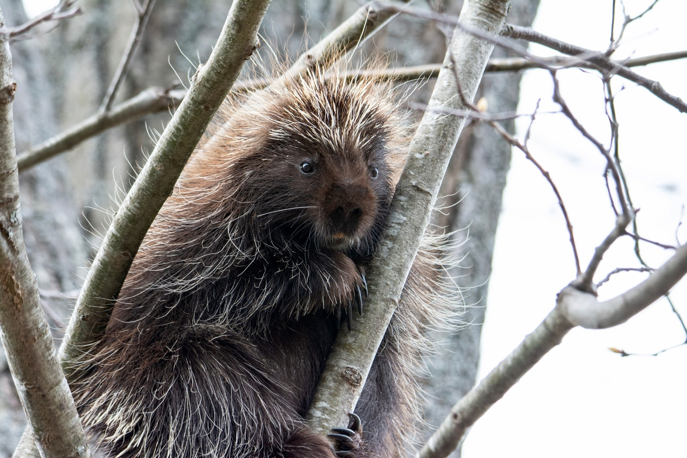
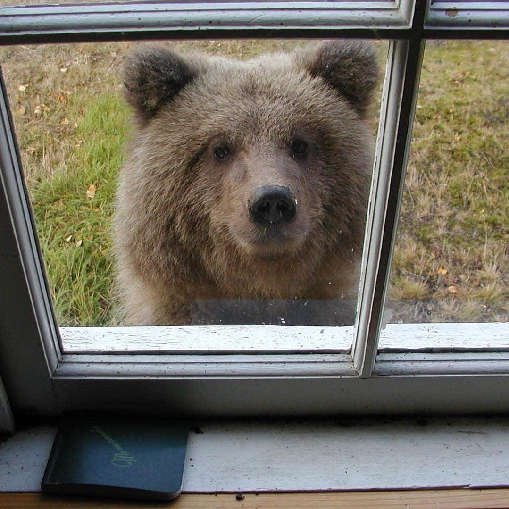
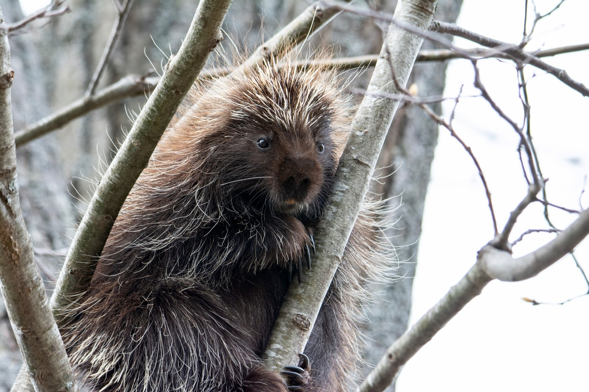
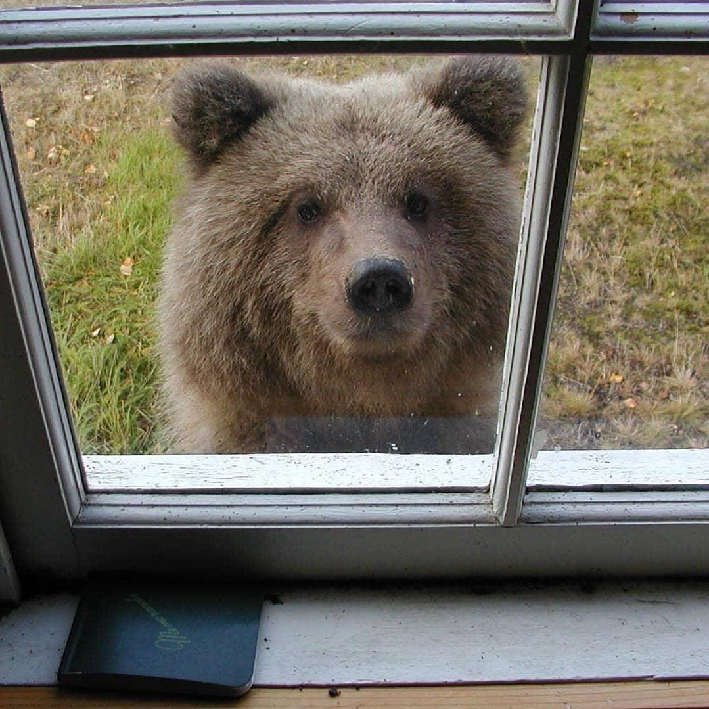
Tonight’s Visitor
Click the button for a story...